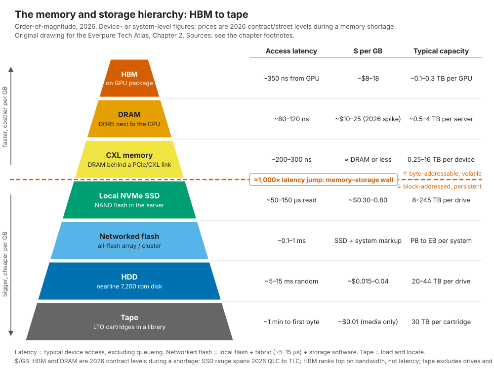
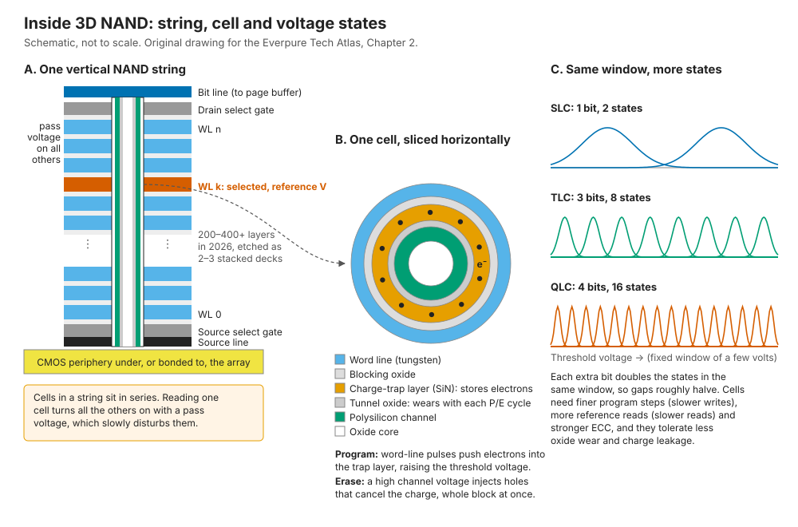
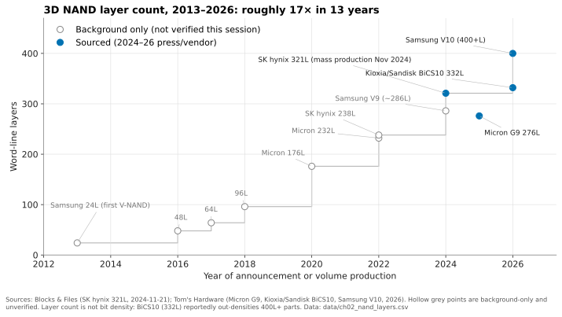
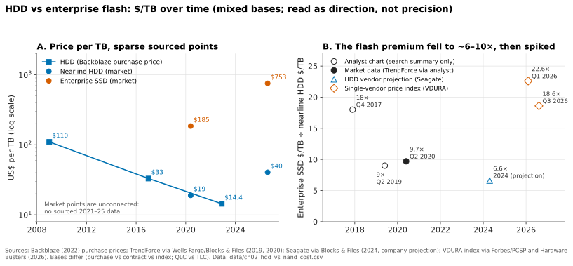

2. Media physics for a semis person¶
Depth: L2 · Reading time: ~14 min · Last verified: 2026-11-01 Prerequisites: What storage does · NAND basics from semiconductors (assumed)
TL;DR¶
- Storage is a cache hierarchy with a cliff in the middle. Memory tiers answer in ~100–400 ns, NAND in ~50–150 µs. Most storage-system design is about hiding that ~1,000× wall.
- NAND is asymmetric by physics. You program pages but erase only whole blocks, and every cell wears out after finite program/erase (P/E) cycles. Hence the flash translation layer (FTL), and why "who runs the FTL" is strategic (Chapter 3, Chapter 26).
- Each extra bit per cell roughly halves the voltage margin. QLC (16 states) is cheaper per bit but slower, less durable and more fragile than SLC (2 states). It works in enterprise only when software turns small random writes into large sequential ones.
- Scaling moved from lithography to layers, and from layers to bonding. Leading 3D NAND went from 24 layers in 2013 to 400+ in 2026. Bit density per mm², not layer count, is the number to ask for.
- HDD is not dead, and the 2026 shortage reset the economics. HAMR ships 40–44 TB drives, and in 2026 enterprise flash cost ~18–23× disk per TB, up from ~6–10×. "Flash replaces disk" now rests on power, density and operations, not purchase price.
Why this matters for Everpure strategy¶
Everpure's core technical bet is that whoever manages raw NAND best wins on cost, density and power. Its DirectFlash Modules expose raw NAND to Purity software rather than hiding it behind a per-drive controller, and the same technology underpins its hyperscaler design wins with Meta (December 2024) and a second top-five hyperscaler (August 2026)12. Claims about endurance, QLC viability or "flash cheaper than disk" all trace back to the physics in this chapter; knowing it lets you test them rather than repeat them.
The 2025–26 memory shortage makes this urgent. NAND contract prices rose every quarter of 2026. TrendForce expected another 15–20% rise in 4Q26, with enterprise SSDs up 23–28%3. When flash costs 18× disk per TB instead of 6×, the argument for replacing disk changes from "cheaper to buy" to "cheaper to power, house and run". Chapter 48 covers the supply cycle.
Core concepts¶
The hierarchy: same logic as a CPU cache, wider gaps¶

Figure 2.1 — Every tier down is roughly 10× cheaper and 10× bigger, but the step from memory to flash costs about 1,000× in latency, and that wall shapes storage architecture.
Sources for the 2026 figures: HBM3E contract pricing is estimated at roughly $8–18 per GB4. In 2026, server DDR5 rose to a similar range: a 64 GB RDIMM ended 1Q26 at about $927, or about $14.5/GB5. The HBM premium over DDR5 was expected to narrow in 20266. A Blackwell Ultra-class GPU carries 288 GB of HBM3E, in 12-high stacks7. HBM is a bandwidth tier, not a latency tier: measured from a GPU core, a dependent load that misses the caches takes roughly 350 ns on an H1008, slower than a CPU's local DRAM. Measured CXL memory expanders show load latencies of about 214–271 ns9. They ship as modules of 256 GB10 and as boxes of up to 16 TB11. NVMe-oF over RDMA adds about 5–15 µs to a local flash access12, and array software adds more. A 30 TB nearline HDD indexed at $1,216 works out to about $0.04/GB13. LTO-10 cartridges hold 30 TB native and sell for about $275–3151415, or about $0.01/GB for media alone.
Three points for a semis reader:
- The wall is architectural, not just quantitative. Above it, the CPU issues loads and stores to volatile, byte-addressable media. Below it, the OS queues block I/O to persistent media through a driver. Crossing it costs a software stack and microseconds of overhead. Intel's Optane partly filled the gap but needed new software models to exploit, and Intel wound it down in 202216.
- 2026 broke the price ladder at the top. HBM normally costs several times DRAM per GB; the 2026 shortage brought them level. DRAM-heavy designs got far costlier, strengthening the case for pushing KV cache and metadata down to flash (Chapter 32).
- Networked flash costs latency, not much else. The fabric adds microseconds against a ~100 µs media read. It buys sharing, protection and independent scaling (Chapter 16).
One level deeper on a NAND cell¶
Modern 3D NAND mostly replaces the floating gate with a charge-trap cell: electrons sit in a silicon-nitride layer wrapped around a vertical polysilicon channel. Word lines are horizontal tungsten plates stacked hundreds high, and a "string" is the column of cells sharing one channel between a bit line and a source line.

Figure 2.2 — Cells sit in series on a vertical string, store charge in a nitride trap, and must fit ever more voltage states into the same few-volt window.
Four behaviours matter for system design:
Program/erase asymmetry. Programming uses incremental step pulses (ISPP) on one word line to tunnel electrons into the trap layer, page by page (~16 kB per plane today; TLC and QLC store several logical pages per word line and often program them in multiple passes). Erase raises the channel to a high voltage relative to every word line in a block. In a charge-trap cell that works mostly by injecting holes that neutralise the trapped electrons, not by pulling electrons back out. Many 3D designs have no body contact under the polysilicon channel, so they generate those holes by gate-induced drain leakage at the select gates. Either way it can only be done for a whole block of many megabytes in current 3D parts. Program takes hundreds of µs (TLC) to a few ms (QLC); erase takes several ms. Above all, you cannot overwrite in place: an update goes to a fresh page, and the old page is garbage until its whole block is reclaimed. That creates the FTL, garbage collection and write amplification, a background housekeeping tax set by cell physics, much as refresh is for DRAM (Chapter 3).
Endurance. Each P/E cycle drives charge through the tunnel oxide and leaves interface and bulk traps behind. The threshold-voltage distributions widen until the controller's error correction (LDPC codes) can no longer separate them. Worked example in drive writes per day (DWPD): DWPD ≈ P/E cycles × (raw ÷ user capacity) ÷ (write amplification × days of warranty). Take a QLC part rated for 1,000 cycles over 5 years (1,825 days), and ignore spare area for simplicity (raw = user). It gives 1,000 ÷ 1,825 ≈ 0.55 DWPD if writes arrive perfectly sequential (WAF = 1). The same drive under random small writes at WAF = 3 gives about 0.18 DWPD. On a 122.88 TB drive, that is the difference between ~67 TB and ~22 TB of host writes per day. A shipping drive shows the same ratio: Micron rates its 245.76 TB QLC 6600 ION at 1.0 DWPD for 128 KB sequential writes but 0.3 DWPD for 16 KB random writes17. The sequential rating also implies that current QLC is good for well over 1,000 cycles, nearer 2,000, so the worked example is conservative.
Retention. Trapped charge leaks, faster when hot and faster in worn cells (the loss is thermally activated, so vendors accelerate it with bake tests). JEDEC's enterprise SSD rating (JESD218) requires only three months of unpowered retention at 40 °C, at the end of rated life. A fresh drive retains far longer, but nobody guarantees how long. Powered drives refresh data in the background, but flash is a poor shelf archive, one reason tape survives.
Read disturb. Cells in a string sit in series, so reading one cell means applying a pass voltage to every other word line in the block. Each read slightly programs the neighbours. After enough reads the controller must relocate the block. AI training rereads the same blocks every epoch, so even a "read-only" workload creates hidden background writes; a good design schedules them away from foreground reads to protect tail latency.
Bits per cell: the cost/quality dial¶
| Cell type | Bits/cell | Voltage states | Typical P/E endurance | Typical page read (tR) | 2026 status |
|---|---|---|---|---|---|
| SLC | 1 | 2 | ~50,000–100,000 | ~20–30 µs | Caches, write buffers, low-latency SCM-like parts |
| MLC | 2 | 4 | ~3,000–10,000 | ~50 µs | Largely displaced in data centers |
| TLC | 3 | 8 | ~3,000–10,000 (enterprise grades at the top) | ~40–80 µs | Performance tier; the volume workhorse |
| QLC | 4 | 16 | ~1,000–3,000 | ~100–160 µs | Capacity tier; 122–256 TB SSDs181920 |
| PLC | 5 | 32 | Lower still (not commercial) | Slower still | Research only; SK hynix showed a split-cell design at IEDM in December 202521 |
Table 2.1 — Each added bit gives 100%, 50%, 33% then 25% more bits per cell, while doubling the states to resolve. The cost gain shrinks as the physics penalty grows. Endurance and tR are typical ranges across vendors. NAND makers rarely publish P/E ratings. The TLC and QLC ranges are consistent with the DWPD ratings of the Micron drives cited in this chapter and Chapter 3 once over-provisioning and WAF are backed out, but they are not datasheet values [VERIFY: confirm P/E ranges against 2025–26 NAND vendor disclosures].
TLC→QLC adds ~33% capacity per die, minus extra ECC parity and over-provisioning. QLC→PLC adds only 25% for twice the states, which is why PLC keeps slipping and the industry adds layers rather than bits.
Why QLC needs a smart write path¶
QLC programs slowly, in large units, and wears out quickly. Small random overwrites force the FTL to keep moving valid data out of partly-stale blocks, so write amplification rises, endurance falls and latency turns erratic. Serious QLC systems put a write path in front of the NAND:
flowchart LR
A["Small random writes from hosts"] --> B["Fast persistent buffer: NVRAM, SCM or SLC-mode flash"]
B --> C["Coalesce, dedupe, compress"]
C --> D["Sort by expected lifetime: hot vs cold"]
D --> E["Large sequential stripes aligned to erase blocks"]
E --> F["QLC NAND"]
F -. "occasional garbage collection of cold data" .-> DFigure 2.3 — QLC is viable in enterprise systems only behind a buffer that turns many small writes into few large, lifetime-sorted ones; the further up the stack this happens, the less the NAND sees.
Commodity QLC SSDs do this inside the drive with an SLC-mode cache, which runs out under sustained writes. Arrays do it one level up: VAST buffers in shared SCM before writing wide QLC stripes (Chapter 16). Everpure's DirectFlash puts the whole job in array software that sees every module's raw NAND (Chapter 26). Hyperscalers push hints down with NVMe Flexible Data Placement so drives can keep data of similar lifetime together22. The semis analogy is a write-combining buffer in front of a DRAM controller.
3D NAND scaling: layers, decks and bonding¶
Planar NAND stopped shrinking in the mid-teens of nanometres, when cells held too few electrons to count reliably, so the industry turned the array on its side. The critical step is now etching a channel hole through the whole stack at extreme aspect ratio. Long stacks are built as two or three decks that are etched separately and aligned. SK hynix's 321-layer part uses three "plugs" and entered mass production in November 202423. The newest step is wafer bonding: building CMOS periphery on a separate wafer and hybrid-bonding it to the array. Samsung's 400+-layer V10 uses it24.

Figure 2.4 — Layer count rose roughly 17× in 13 years, but it is a poor proxy for cost per bit; density and wafer cost decide competitiveness.
Data: data/ch02_nand_layers.csv
Layer count is a marketing number. Kioxia/Sandisk's 332-layer BiCS10 reportedly reaches about 37 Gb/mm² as QLC, which is denser than Samsung's 400+-layer V10 (about 28 Gb/mm² as TLC)2524. Micron's 276-layer G9 is about 21 Gb/mm² in TLC26. Comparing QLC with TLC flatters BiCS10, but the lesson stands: ask for Gb/mm², wafer cost and yield, as for a logic node. Each deck adds deposition and etch steps, so capex per wafer rises even as cost per bit falls, which makes suppliers cautious about adding capacity even in a shortage.
Bigger dies and more layers produce bigger drives. Micron began shipping the 245.76 TB 6600 ION, built on G9 QLC, in May 202618. Sandisk has a 256 TB drive on 218-layer BiCS8 and shows 512 TB on its roadmap for 202720. Everpure's DirectFlash Module is reported at up to 300 TB27 [VERIFY: GA and ship date of the 300 TB DFM].
HDD mechanics: capacity keeps rising, performance does not¶
Random access on a hard drive needs a head seek plus, on average, half a platter rotation. At 7,200 rpm one rotation takes 60 ÷ 7,200 = 8.33 ms, so average rotational latency is ~4.2 ms. Nearline drives have long been specified at ~8 ms average seek, and measured access times run a little higher28. A random read therefore costs ~12 ms, or roughly 80 IOPS per drive at queue depth 1. Command queuing lets the drive reorder requests to shorten seeks, so a 30 TB HAMR drive reaches ~170 random-read IOPS at queue depth 16 (Chapter 4). Those figures have barely moved in 20 years while capacity has grown more than tenfold. A 30 TB drive therefore delivers ~3–6 IOPS per TB. Rebuilding one at an assumed ~250 MB/s sustained takes 30 × 10¹² ÷ 250 × 10⁶ ≈ 120,000 s, about 33 hours at best. Bigger HDDs suit bulk sequential data and get worse at everything else, which is why vendors now pitch bandwidth as well as terabytes29.
Capacity growth depends on areal density, which runs into the magnetic trilemma. Smaller grains store more bits but become thermally unstable. Stable, high-anisotropy grains need a stronger write field than a head can produce. Three recording technologies work around it:
| Technology | How it adds density | The catch | 2026 status |
|---|---|---|---|
| CMR / ePMR | Perpendicular grains; energy-assisted write heads | Approaching trilemma limits | WD roadmap: ePMR to 60 TB, 40 TB UltraSMR drives in 2H 202630 |
| SMR (shingled) | Overlaps tracks like roof shingles, since read heads are narrower than write heads | Can't rewrite one track without rewriting its band; host-managed SMR needs sequential zone writes, much like NAND erase blocks | Common in hyperscale; WD UltraSMR at 40 TB30 |
| HAMR | A laser heats a tiny spot for a nanosecond so a high-anisotropy (FePt) medium can be written, then it cools stably | New heads, media and reliability proof; slow volume ramp | Seagate Mozaic 3+ at 30 TB from 202431; Mozaic 4+ at up to 44 TB shipping in volume to two hyperscalers from March 202632; WD HAMR ramps 2027, targets 100 TB by 202930 |
Table 2.2 — HDD makers trade write flexibility (SMR) or manufacturing complexity (HAMR) for capacity; none of it improves random I/O.
Note the SMR/NAND parallel: both prefer large sequential writes into zones that must be reclaimed whole, so the same zoned-storage software ideas (ZNS, FDP, log-structured layouts) apply to both (Chapter 12).
Cost-per-bit curves: why the gap moved¶

Figure 2.5 — Flash's price premium over disk roughly halved between 2017 and 2020, then the 2026 shortage pushed it back to around 20×; the sources use different bases, so read direction, not decimals.
Data: data/ch02_hdd_vs_nand_cost.csv
The HDD curve is slow and steady. Backblaze's purchase cost fell from about $0.11/GB in 2009 to $0.014/GB in November 202233, an average decline of ~1.2% a month, or ~14% a year. NAND's curve is steeper but cyclical. In Q2 2020, TrendForce data put enterprise SSDs at about $185/TB against $19/TB for nearline disk, a 9.7× premium34. Seagate said in 2024 that it expected disk to hold a >6:1 advantage through 2027, averaging 6.6:1 (company-stated)35. Then the shortage hit. VDURA's Flash Volatility Index put a 30 TB QLC SSD at 22.6× a 30 TB HDD per TB in Q1 2026, up from 4.9× in Q2 202536, and a 30 TB TLC SSD at 18.6× in Q3 2026 ($22,600 against $1,216)13. The index comes from a hybrid flash-and-disk vendor that does not disclose its price sources, and it has switched between QLC and TLC bases between releases, so read the level with caution [VERIFY: corroborate the 2026 premium with TrendForce or Coughlin data]. Disk rose too: the index's 30 TB HDD went from $668 in Q1 to $1,216 in Q3 2026.
Flash wins elsewhere. Micron rates the 245 TB drive at ~8.2 TB/W against ~4.4 TB/W for a 44 TB HDD (vendor comparison)19. Everpure claims DirectFlash cuts power by up to 75% compared with HDD (vendor claim)37. Where power and space bind, as in AI data centers, TCO can favour flash despite the premium. Chapter 4 works the TCO.
How Everpure approaches it vs. competitors¶
| Approach | Who | Where NAND is managed | Strength | Weakness |
|---|---|---|---|---|
| Raw NAND under array software | Everpure DirectFlash (FlashArray, FlashBlade, hyperscaler DFMs) | Purity, globally across modules | One FTL for the whole system: lifetime-aware placement, less over-provisioning, very large modules | Proprietary module; Everpure carries NAND qualification and supply work |
| Commodity SSDs + SCM buffer | VAST | SSD FTLs, with an SCM write buffer shaping writes into wide QLC stripes | Uses the industry's largest standard drives; buffer absorbs QLC weaknesses | Two FTL layers; dependence on an SCM tier38 |
| Commodity TLC/QLC SSDs | NetApp, Dell, WEKA, DDN and most others | Inside each drive | Multi-sourced, fast to adopt new drives | Each drive reserves its own spare area and does its own garbage collection |
| Host-guided placement | Hyperscalers using FDP | Shared: host hints, drive executes | Cuts write amplification without custom hardware22 | Needs software built for it; hyperscale-specific |
| Disk plus flash cache | Hyperscale bulk tiers, HDD vendors' thesis | N/A for disk | Lowest acquisition $/TB; 6–20× gap | Few IOPS per TB, long rebuilds, more power and space per PB |
Table 2.3 — The competitive question is not "flash or disk" but where the flash-management intelligence lives and who pays for it.
The steelman for commodity SSDs is supply flexibility: a new 245 TB drive can be qualified quickly, while a module vendor must build its own. The steelman for disk: at an 18× gap, exabyte-scale cold data stays on HDD and tape for years. Two public facts shape Everpure's position. Its Meta and second-hyperscaler deals license DirectFlash technology, and management has said Everpure does not procure the NAND for the hyperscaler business2, which insulates that revenue line from NAND price spikes. It has also qualified multiple NAND sources (Micron G8/G9 QLC, Kioxia BiCS8)39. Options a strategy team might evaluate, based on public information: how much of the 2026 NAND price rise flows through array pricing versus margin, and whether a structurally higher flash premium slows HDD-replacement deals while strengthening the power-and-density argument for AI sites.
History and trajectory¶
timeline
title Storage media milestones
1956 : IBM RAMAC ships the first hard disk drive
1987 : Toshiba presents NAND flash
2013 : Samsung ships first 3D V-NAND at 24 layers
2022 : Intel winds down Optane
2024 : Seagate launches 30 TB HAMR drives : SK hynix mass-produces 321-layer NAND
2025 : LTO-10 30 TB cartridges ship : Sandisk 256 TB QLC SSD announced : SK hynix shows split-cell PLC research
2026 : Micron ships 245 TB QLC SSD : Samsung unveils 400-plus-layer V10 : NAND contract prices surge : Seagate ships 44 TB HAMR to hyperscalers
2027-2029 : WD HAMR ramps in 2027 : WD targets 100 TB HAMR by 2029Figure 2.6 — Flash capacity per device overtook disk by roughly 5× in 2026, while HDD's new technology, HAMR, is only now reaching volume.
The RAMAC date is from the Computer History Museum40; Toshiba's NAND paper (Masuoka et al., IEDM 1987) and Samsung's 24-layer V-NAND (2013) are standard history, and the 2016–2022 layer points in Figure 2.4 are background only. Looking forward: Layer roadmaps target ~500 layers, though vendor timelines conflict26. PLC remains research21. HDD capacity roadmaps (WD: 100 TB by 2029) depend on HAMR ramping on schedule30. Meanwhile the 2026 price shock is a supply-discipline event, not a physics event. AI servers absorbed bits, and TrendForce reported most new supply already committed3. Its length matters for 2027 pricing.
Numbers that matter¶
| Metric | Value | Context | Source / date |
|---|---|---|---|
| Largest shipping standard SSD | 245.76 TB (Micron 6600 ION, QLC) | Shipping since 2026-05-05 | Micron18 |
| Leading 3D NAND layer count | 400+ (Samsung V10) | Hybrid-bonded; density per mm² matters more | Tom's Hardware, 202624 |
| Largest HDD shipping to hyperscalers | Up to 44 TB (Seagate Mozaic 4+, HAMR) | Shipping in volume to two hyperscalers from March 2026 | Seagate, 2026-03-0332 |
| Enterprise SSD ÷ nearline HDD $/TB | 22.6× (QLC, Q1 2026); ~18.6× (TLC, Q3 2026); 9.7× (Q2 2020) | Single-vendor index vs TrendForce data | Blocks & Files36; Hardware Busters13; Blocks & Files34 |
| 4Q26 NAND contract price change | +15–20% QoQ (enterprise SSD +23–28%) | Forecast; follows large 1H26 rises | TrendForce, 2026-09-303 |
| Capacity per watt | ~8.2 TB/W (245 TB QLC) vs ~4.4 TB/W (44 TB HDD) | Vendor comparison | StorageReview19 |
| CXL memory load latency | ~214–271 ns | Measured expander devices | arXiv, 20249 |
| LTO-10 cartridge | 30 TB native, ~$275–315 | ~$0.01/GB media only | TechRadar14 |
| QLC endurance in DWPD | ~0.55 at WAF 1; ~0.18 at WAF 3 | 1,000 P/E, 5-year warranty; Micron 245 TB rated 1.0 sequential / 0.3 random | Worked example; StorageReview17 |
| HDD random IOPS per TB (30 TB) | ~3–6 | ~80 IOPS at QD1 to ~170 at QD16, ÷ 30 TB | Worked example |
Conversation playbook¶
Questions for a PM
- "At today's flash premium over disk, where does an all-flash pitch still win on TCO, and where do we lose?" Strong: names the binding constraint per segment (power, rack space, rebuild risk) and a break-even premium, not "flash is always cheaper".
- "How exposed are product margins to the 2026 NAND price rise, and how much is passed through?" Strong: separates arrays (Everpure buys NAND) from hyperscaler licensing (customer buys NAND), and covers contract timing and Evergreen commitments that limit repricing.
- "What does QLC let us sell that TLC doesn't, and where would we refuse to put QLC?" Strong: capacity and power wins for file, object and backup; caution for write-heavy, latency-critical block workloads unless the write path absorbs them.
Questions for an engineer
- "What effective WAF does Purity see on QLC in the field, and how does that translate into DWPD headroom?" Strong: a measured number by workload, and how the system-level FTL keeps WAF near 1.
- "How do you handle read disturb and retention on read-mostly AI datasets?" Strong: background scrub and relocation scheduled around foreground I/O, plus telemetry on read-retry rates as a wear signal.
- "What changes when you move from a 75 TB to a 300 TB module: rebuild time, blast radius, performance per TB?" Strong: rebuild hours, protection scheme, and how in-module parallelism stops performance per TB collapsing as it does on large HDDs.
Don't say this:
- "More layers means cheaper flash." Bit density, wafer cost and yield decide cost per bit. A 332-layer part can out-density a 400-layer one.
- "QLC wears out too fast for enterprise." Behind a good write path it is adequate for most capacity workloads.
- "Flash is now cheaper than disk." Not on purchase price in 2026, when the premium is roughly 18× or more by one vendor's index. Argue TCO, power and density instead.
- "SSDs are a good archive." JEDEC-rated unpowered retention at end of life is three months, and nothing guarantees years.
- "HAMR fixes disk performance." It adds capacity. IOPS per drive stay flat, so IOPS per TB keep falling.
Going deeper (optional, L3 pointers)¶
- JEDEC JESD218/JESD219: SSD endurance and retention test conditions.
- IEDM/ISSCC NAND papers: tR, tPROG and bonding by vendor, e.g. SK hynix's multi-site-cell PLC (IEDM 2025)21.
- NVM Express FDP (TP4146) and ZNS specifications22.
- Seagate and Western Digital investor-day decks on HAMR roadmaps.
Key terms¶
- P/E cycle — one program/erase cycle of a NAND block; the unit of flash wear.
- DWPD — drive writes per day sustainable over the warranty.
- Charge-trap cell — 3D NAND cell storing electrons in a nitride layer.
- Read disturb — gradual corruption of unread cells caused by reads of neighbours.
- QLC / PLC — 4 and 5 bits per cell NAND.
- HAMR / SMR — heat-assisted and shingled magnetic recording.
- Memory–storage wall — the ~1,000× latency step between DRAM-class memory and flash.
- See the glossary for the rest.
Sources¶
-
SiliconANGLE, "Shares of Pure Storage jump on impressive earnings beat and strong guidance," 2024-12-03. https://siliconangle.com/2024/12/03/shares-pure-storage-jump-impressive-earnings-beat-strong-guidance/ (retrieved 2026-11-01). ↩
-
Everpure, "Everpure Lands New Design Win with Second Top-Five Hyperscaler," 2026-08-10. https://www.everpuredata.com/company/newsroom/press-releases/everpure-lands-new-design-win-with-second-top-five-hyperscaler.html (retrieved 2026-11-01); Motley Fool, "Everpure (P) Q2 2027 Earnings Call Transcript," 2026-08-31. https://www.fool.com/earnings/call-transcripts/2026/08/31/everpure-p-q2-2027-earnings-call-transcript/ (retrieved 2026-11-01). ↩↩
-
TrendForce, "AI Server Demand Sustains Memory Contract Price Increases in 4Q26, While Consumer-Side Pressure Persists," 2026-09-30. https://www.trendforce.com/presscenter/news/20260930-13258.html (retrieved 2026-11-01). ↩↩↩
-
Silicon Analysts, "HBM Memory Pricing and Specifications (2026)," 2026. https://siliconanalysts.com/data/hbm-pricing (retrieved 2026-11-01; figures seen via search summary). ↩
-
Counterpoint Research, "Memory Price Tracker, April 2026," 2026-04. https://counterpointresearch.com/de/reports/memory-price-tracker-april-2026 (retrieved 2026-11-01; figure seen via search summary, consistent with a Citi estimate of $873 for 1Q26). ↩
-
uAnalyze, "DDR5大漲價 2026年與HBM3e定價差距將收斂" (DDR5 price surge: gap with HBM3e pricing to narrow in 2026), n.d. (late 2025). https://uanalyze.com.tw/articles/1451142587 (retrieved 2026-11-01). ↩
-
NVIDIA, "NVIDIA Blackwell Ultra AI Factory Platform Paves Way for Age of AI Reasoning," 2025-03-18. https://nvidianews.nvidia.com/news/nvidia-blackwell-ultra-ai-factory-platform-paves-way-for-age-of-ai-reasoning (primary release not fetched); The Register, "We heard you like HBM – Nvidia's Blackwell Ultra GPUs will have 288 GB of it," 2025-03-18. https://www.theregister.com/2025/03/18/nvidia_blackwell_ultra/ (retrieved via search 2026-11-01). ↩
-
arXiv:2608.15764, "Concurrency Response of Plain Global Loads on the NVIDIA H100," 2026-08. https://arxiv.org/pdf/2608.15764 (seen via search summary, 2026-11-01). Pointer-chase plateau of ~353 ns for HBM-resident working sets; cycle-based studies report ~290–480 cycles. ↩
-
arXiv:2409.14317, "Dissecting CXL Memory Performance at Scale: Analysis, Modeling, and Optimization," 2024-09. https://arxiv.org/pdf/2409.14317 (retrieved 2026-11-01). ↩↩
-
Red Hat Ecosystem Catalog, "Micron CMM CZ120 256GB E3.S CXL2.0 Memory Expander," n.d. https://catalog.redhat.com/en/hardware/components/detail/259147 (retrieved 2026-11-01). ↩
-
AnandTech, "Samsung Unveils CXL Memory Module Box: Up to 16 TB at 60 GB/s," 2024. https://www.anandtech.com/show/21333 (retrieved 2026-11-01). ↩
-
R. Davis (Mellanox), "Demonstrating NVMe Performance over Ethernet," SNIA Data Storage Innovation Conference, 2016. https://www.snia.org/sites/default/files/DSI/2016/presentations/stor_networks/Rob_Davis_Demonstrating_NVMe_Performance_Ethernet.pdf (retrieved 2026-11-01). ↩
-
Hardware Busters, "Enterprise SSD Prices Now Run 18.6x Hard Drives, and the Cheap Alternative Is Sold Out Until 2027," 2026. https://hwbusters.com/news/enterprise-ssd-prices-now-run-18-6x-hard-drives-and-the-cheap-alternative-is-sold-out-until-2027/ (retrieved 2026-11-01). ↩↩↩
-
TechRadar, "Tape storage is not dead yet – but $300 LTO-10 cartridges and inflated exabyte numbers won't help its cause," n.d. (2025–26). https://www.techradar.com/pro/tape-is-not-dead-yet-but-usd300-lto-10-cartridges-and-inflated-exabyte-numbers-wont-help-its-cause (retrieved 2026-11-01). ↩↩
-
StorageNewsletter, "Availability of FujiFilm LTO Ultrium 10 Cartridge with 30TB Native Capacity," 2025-06-16. https://www.storagenewsletter.com/2025/06/16/availability-of-fujifilm-lto-ultrium-10-cartridge-with-30tb-native-capacity/ (retrieved 2026-11-01). ↩
-
AnandTech, "Intel To Wind Down Optane Memory Business – 3D XPoint Storage Tech Reaches Its End," 2022-07-28. https://www.anandtech.com/show/17515 (retrieved 2026-11-01). ↩
-
StorageReview, "Micron 6600 ION 245TB SSD Review: A Quarter Petabyte Per Drive Bay," 2026. https://www.storagereview.com/review/micron-6600-ion-245tb-ssd-review-a-quarter-petabyte-per-drive-bay (retrieved via search 2026-11-01). Spec table: 1.0 DWPD (128 KB sequential), 0.3 DWPD (16 KB random). ↩↩
-
Micron Technology, "Industry-Leading 245TB Micron 6600 ION Data Center SSD Now Shipping," 2026-05-05. https://investors.micron.com/news/press-release/2026/Industry-Leading-245TB-Micron-6600-ION-Data-Center-SSD-Now-Shipping/default.aspx (retrieved 2026-11-01). ↩↩↩
-
StorageReview, "Micron 6600 ION 245TB SSD Review: A Quarter Petabyte Per Drive Bay," 2026. https://www.storagereview.com/review/micron-6600-ion-245tb-ssd-review-a-quarter-petabyte-per-drive-bay (retrieved 2026-11-01); StorageReview, "Solidigm 122.88TB D5-P5336 Review," 2025. https://www.storagereview.com/review/solidigm-122-88tb-d5-p5336-review-high-capacity-storage-meets-operational-efficiency (retrieved 2026-11-01). ↩↩↩
-
Blocks & Files, "Sandisk unveils 256 TB SSD for AI workloads, shipping in 2026," 2025-08-05. https://www.blocksandfiles.com/ai-ml/2025/08/05/sandisk-unveils-256-tb-ssd-for-ai-workloads-shipping-in-2026/1589534 (retrieved 2026-11-01). ↩↩
-
Blocks & Files, "SK hynix developing split-cell 5-bit flash," 2026-01-15. https://www.blocksandfiles.com/flash/2026/01/15/sk-hynix-developing-split-cell-5-bit-flash/4090388 (retrieved 2026-11-01). ↩↩↩
-
NVM Express, "Overcoming the Write Amplification Problem with NVM Express Flexible Data Placement," n.d. https://nvmexpress.org/nvmeflexible-data-placement-fdp-blog/ (retrieved 2026-11-01). ↩↩↩
-
Blocks & Files, "SK hynix begins mass production of 321-layer 3D NAND," 2024-11-21. https://www.blocksandfiles.com/ai-ml/2024/11/21/sk-hynix-begins-mass-production-of-321-layer-3d-nand/1605947 (retrieved 2026-11-01). ↩
-
Tom's Hardware, "Samsung unveils 10th Gen V-NAND: 400+ layers, 5.6 GT/s and hybrid bonding," 2026. https://www.tomshardware.com/pc-components/ssds/samsung-unveils-10th-gen-v-nand-400-layers-5-6-gt-s-and-hybrid-bonding (retrieved 2026-11-01). ↩↩↩
-
Tom's Hardware, "Kioxia and Sandisk sample world's densest 3D NAND — new 332-Layer beats Samsung's 400-Layer NAND," 2026. https://www.tomshardware.com/pc-components/ssds/kioxia-and-sandisk-sample-worlds-densest-3d-nand-new-332-layer-beats-samsungs-400-layer-nand (retrieved 2026-11-01). ↩
-
Tom's Hardware, "Inside the future of 3D NAND: The roadmap to 500 layers," 2026. https://www.tomshardware.com/pc-components/storage/inside-the-future-of-3d-nand-the-roadmap-to-500-layers (retrieved 2026-11-01). ↩↩
-
Blocks & Files, "Second hyperscaler plumps for Everpure's flash technology," 2026-08-11. https://www.blocksandfiles.com/flash/2026/08/11/second-hyperscaler-plumps-for-everpures-flash-technology/5285903 (retrieved 2026-11-01). ↩
-
StorageReview, "Seagate NL35" review (7,200 rpm nearline drive specified at 8 ms seek; 13.1 ms measured average read access time), n.d. (mid-2000s). https://storagereview.com/review/seagate-nl35 (seen via search summary, 2026-11-01). ↩
-
StorageReview, "WD Bets 8x Bandwidth Beats More Terabytes as 40TB UltraSMR Starts Shipping," 2026. https://www.storagereview.com/news/wd-bets-8x-bandwidth-beats-more-terabytes-as-40tb-ultrasmr-starts-shipping (retrieved 2026-11-01). ↩
-
Western Digital, "Western Digital Accelerates Storage Innovation for AI Era," 2026-02-03. https://www.westerndigital.com/company/newsroom/press-releases/2026/2026-02-03-western-digital-accelerates-storage-innovation-for-ai-era (retrieved 2026-11-01). ↩↩↩↩
-
PetaPixel, "Seagate's new 30TB Hard Drive is the Largest Ever," 2024-01-18. https://petapixel.com/2024/01/18/seagates-new-30tb-hard-drive-is-the-largest-ever/ (retrieved 2026-11-01). ↩
-
Seagate Technology, "Seagate Delivers Industry's Highest Capacity Hard Drives with Next-Generation Mozaic 4+," 2026-03-03. https://investors.seagate.com/news/news-details/2026/Seagate-Delivers-Industrys-Highest-Capacity-Hard-Drives-with-Next-Generation-Mozaic-4/default.aspx (retrieved via search 2026-11-01). ↩↩
-
Backblaze, "Hard Drive Cost Per Gigabyte," 2022-11. https://www.backblaze.com/blog/hard-drive-cost-per-gigabyte/ (retrieved 2026-11-01; figures seen via search summary); Blocks & Files, "Backblaze predicts HDD prices will fall to 1¢/GB by mid-2025," 2022-12-12. https://blocksandfiles.com/2022/12/12/backblaze-sees-hdd-pricing-falling-to-a-penny-a-gig/ (retrieved 2026-11-01). ↩
-
Blocks & Files, "Enterprise SSDs cost ten times more than nearline disk drives," 2020-08-24. https://blocksandfiles.com/2020/08/24/10x-enterprise-ssd-price-premium-over-nearline-disk-drives/ (retrieved 2026-11-01); Blocks & Files, "How long before SSDs replace nearline disk drives?," 2019-08-28. https://blocksandfiles.com/2019/08/28/nearline-disk-drives-ssd-attack/ (retrieved 2026-11-01). ↩↩
-
Blocks & Files, "Seagate: Is flash killing the hard drive? No," 2024-05-01. https://blocksandfiles.com/2024/05/01/seagate-is-flash-killing-the-hard-drive-no/ (retrieved 2026-11-01). ↩
-
Blocks & Files, "VDURA says 30 TB QLC SSD capacity now costs 22.6x more than HDD," 2026-04-08. https://www.blocksandfiles.com/flash/2026/04/08/vdura-says-30-tb-qlc-ssd-capacity-now-costs-226x-more-than-hdd/5214761 (retrieved via search 2026-11-01); Tom's Hardware, "Vdura hikes its enterprise SSD pricing, now costs 22.6x more than hard drives," 2026-04. https://www.tomshardware.com/pc-components/ssds/vdura-sharply-revises-its-enterprise-ssd-pricing-figures (retrieved via search 2026-11-01). ↩↩
-
Pure Storage, "Hyperscaler," n.d. https://purestorage.com/pure-advantage/platform/hyperscaler.html (retrieved 2026-11-01). ↩
-
VAST Data Knowledge Base, "DBox DF-3015V2/DF-3060V2 Ceres Datasheet," n.d. https://kb.vastdata.com/docs/dbox-df-3015v2df-3060v2-ceres-datasheet (retrieved 2026-11-01). ↩
-
Blocks & Files, "Pure qualifies Micron's 276-layer flash," 2025-01-08. https://blocksandfiles.com/2025/01/08/pure-qualifies-microns-276-layer-flash/ (retrieved 2026-11-01); Blocks & Files, "Kioxia 2 terabit NAND," 2024-07-03. https://blocksandfiles.com/2024/07/03/kioxia-2-terabit-nand/ (retrieved 2026-11-01). ↩
-
Computer History Museum, "1956: First commercial hard disk drive shipped," n.d. https://www.computerhistory.org/storageengine/first-commercial-hard-disk-drive-shipped/ (retrieved 2026-11-01). ↩